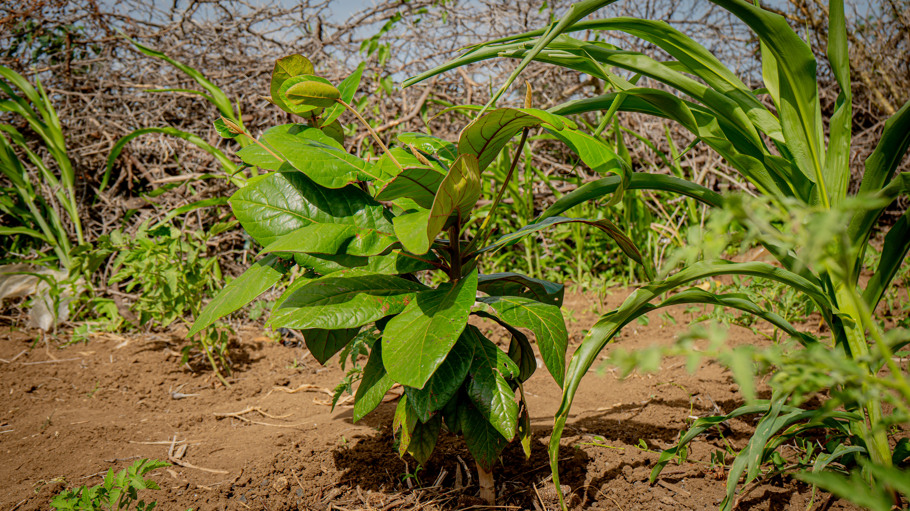

Our Work in Action
Gallery
A glimpse of our restoration work, community events, and environmental campaigns in the field.


🏔️
💧
🤝
Deegansan works at the intersection of rangeland restoration, awareness raising, and climate action — turning local actions into lasting global impact.
Deegansan is an environmental advocacy organization dedicated to ecosystem and rangeland restoration through community-led programs, education, and celebration of key environmental milestones.
We believe that sustainable change begins at the local level. By empowering communities to understand, protect, and restore their natural environments, we create ripples of impact that extend far beyond borders.
To restore degraded rangelands and ecosystems through awareness, community engagement, and science-based restoration practices.
A world where thriving ecosystems sustain communities, biodiversity, and climate resilience for generations to come.
Local action, global thinking — combining traditional ecological knowledge with modern conservation science.
From rangeland restoration to climate education, our programs address the root causes of environmental degradation while building community resilience.
Rehabilitating degraded rangelands through reseeding, soil conservation, and rotational grazing management practices that restore biodiversity and community livelihoods.
Ecosystem RestorationBuilding community capacity to protect watersheds, prevent erosion, and implement sustainable water harvesting techniques in vulnerable landscapes.
ConservationConducting workshops, campaigns, and educational events that connect communities to environmental issues and inspire meaningful local action for global change.
EducationEngaging policymakers and communities on climate adaptation strategies, amplifying voices most affected by changing weather patterns and environmental instability.
AdvocacyBuilding grassroots networks of environmental champions who lead conservation activities, monitor ecosystems, and report on restoration progress in their regions.
CommunityDocumenting ecosystem health indicators, tracking restoration outcomes, and generating evidence to guide adaptive management and policy recommendations.
ScienceWe mark and celebrate key global environmental days with awareness campaigns, community events, and calls to action.
Freshwater conservation & access awareness
Global environmental protection mobilization
UN-led ecosystem restoration focus
Soil health, degradation & conservation
Climate resilience & community preparedness
Every year, Deegansan organizes field events, community dialogues, and media campaigns around major environmental world days — turning global awareness into local action on the ground.
Our events bring together youth, pastoralists, farmers, and policymakers to share knowledge, celebrate progress, and commit to restoration pledges.
A glimpse of our restoration work, community events, and environmental campaigns in the field.

Your contribution directly funds rangeland restoration, community education, and environmental advocacy that transforms landscapes and lives.
Donate NowMake an immediate difference with a single contribution to restoration efforts
Sustain long-term programs with regular support that planners can count on
Sponsor a specific area of rangeland restoration and receive progress reports
Join our field teams, awareness campaigns, or share your expertise remotely
Reach out for partnerships, volunteer opportunities, media inquiries, or to learn more about our work.
Mogadishu, Somalia
Serving communities across the Horn of Africa
info@deegansan.org
partnerships@deegansan.org
+252 61 888 0388
@deegansan on Twitter, Facebook & Instagram